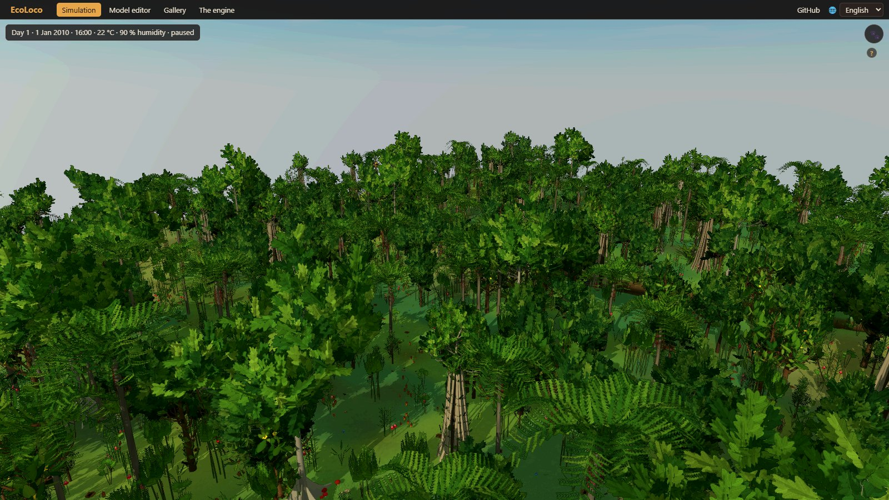
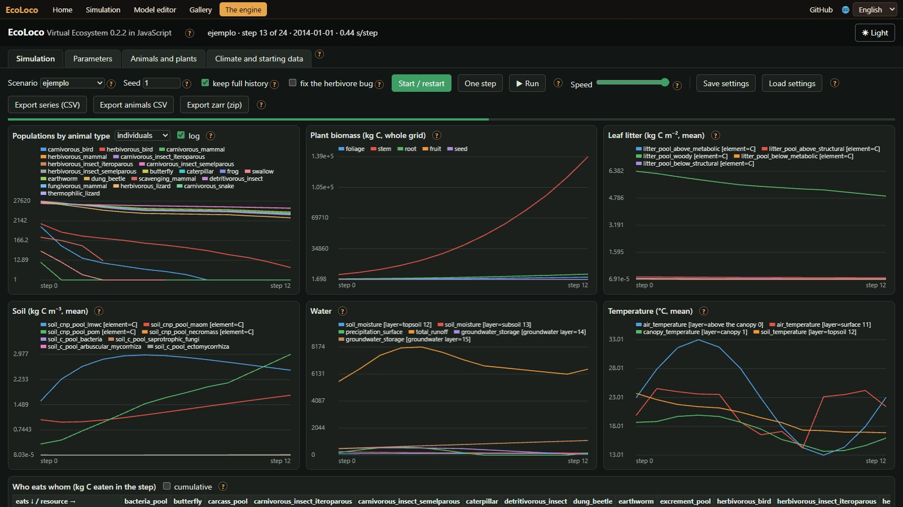
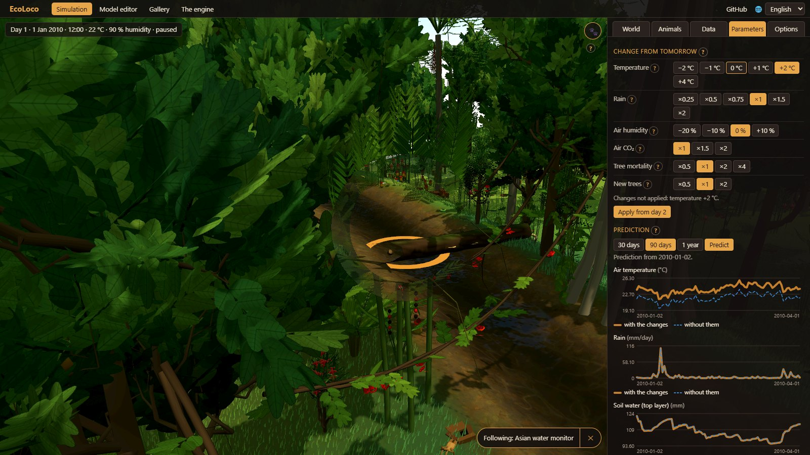
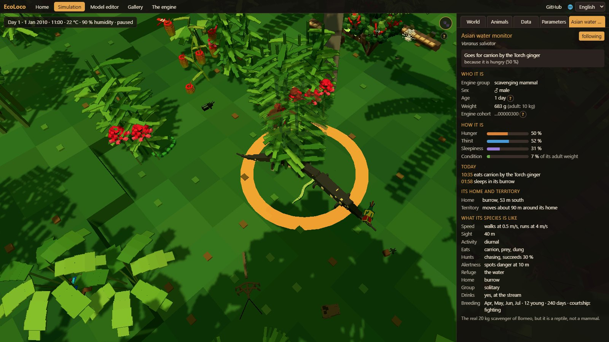
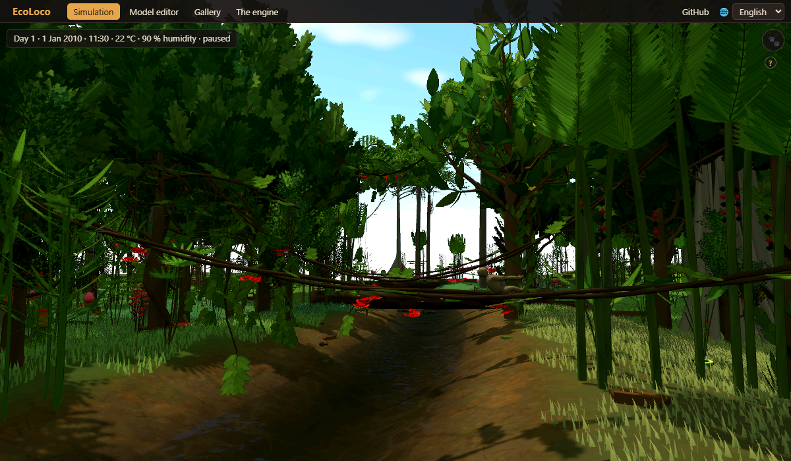
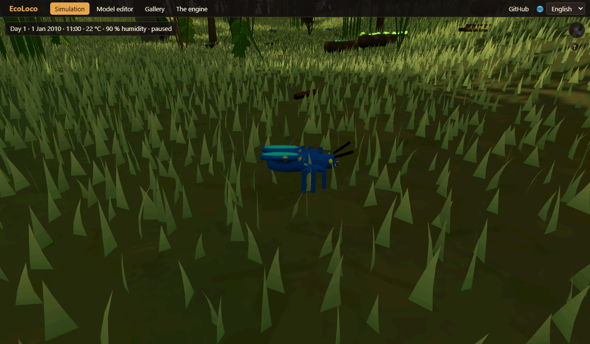

Virtual Ecosystem, el modelo de ecosistemas del Imperial College de Londres, en JavaScript: los mismos resultados, bit a bit, mucho más rápido; con una interfaz para cada parámetro y gráfica, y una selva viva en 3D.

Virtual Ecosystem es un proyecto de investigación del Imperial College de Londres que construye un ecosistema completo en el ordenador. Simula un bosque entero como un conjunto de modelos acoplados: las plantas crecen y compiten por la luz y el agua, los animales comen, crecen, se reproducen y mueren, la hojarasca cae y se descompone, el suelo guarda y suelta carbono y nutrientes, el agua se mueve por el suelo y el microclima bajo el dosel cambia con todo ello. Todo se calcula celda a celda sobre una rejilla y paso a paso en el tiempo.
Es una herramienta científica escrita en Python: se configura con ficheros de texto, se corre desde la línea de comandos y sus resultados son ficheros de datos. Sus autores explican las ideas que hay detrás en:
Ewers, R. M., Cook, J., Daniel, O., Orme, D., Groner, V., Joshi, J., Rallings, A., Rallings, T. & Amarasekare, P. (2024). New insights to be gained from a Virtual Ecosystem. EcoEvoRxiv. doi:10.32942/X26W5B
EcoLoco es Virtual Ecosystem en el navegador, con dos cosas encima: una interfaz para cambiar cada parámetro y ver cada resultado, y un mundo vivo en 3D donde se ve a los animales y plantas de Borneo haciendo lo que dice la simulación.
Virtual Ecosystem 0.2.2 se ha reescrito en JavaScript, módulo a módulo. No es una aproximación: da exactamente los mismos números que el original, bit a bit, en todas las salidas comparadas (todas las variables de cada paso y las tablas de animales y plantas). Corre en cualquier navegador, sin instalar nada, y mucho más rápido:
| Escenario | Original (Python) | Nuestro motor (JavaScript) | Más rápido |
|---|---|---|---|
| Ejemplo, paso mensual (2 años, 9 × 9 celdas) | 134,9 s | 13,2 s | ×10 |
| Ejemplo, paso diario (60 días, 9 × 9 celdas) | 31 min 14 s | 38,0 s | ×49 |
Pasadas completas, de cargar los datos a escribir todas las salidas, medidas una detrás de otra en el mismo ordenador (Ryzen 9 5900X, Windows 11; Python 3.12.4, Node 22). En los dos casos dan exactamente los mismos bits.
Todo lo que en el original es un fichero de texto o de datos se puede hacer aquí con el ratón: elegir y cambiar cada parámetro de cada modelo (más de 300, cada uno con su explicación), los tipos de animal y de planta, el clima y los datos de partida; correr el modelo paso a paso; ver en gráficas las poblaciones, la biomasa, el suelo, el agua y la temperatura; explorar cualquier variable en el mapa; y exportar los resultados en los mismos formatos que el original. Dentro del mundo vivo se puede cambiar el clima desde mañana, con una predicción de lo que pasaría con y sin el cambio.


El bosque que calcula el modelo se convierte en una selva de Maliau (Borneo) en 3D, con su clima diario real. Los árboles son las cohortes de plantas del modelo, a su densidad y su altura reales. Encima, cada animal se simula como un individuo, minuto a minuto: busca comida, bebe, duerme a su hora, huye de los depredadores, caza, corteja y anida. Cada día este mundo se cuadra con el modelo, así que los nacimientos, las muertes, quién se come a quién y cuánto se come son los de Virtual Ecosystem.



EcoLoco es un proyecto independiente, no hecho por el equipo de Virtual Ecosystem. Gracias también a pyrealm (también del Imperial), three.js, ez-tree (Daniel Greenheck) para los árboles, los datos de clima ERA5 de Copernicus a través de Open-Meteo y los observadores de iNaturalist cuyas fotos salen en la galería.